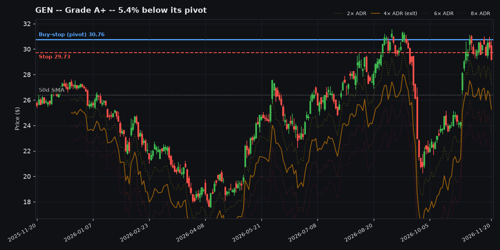
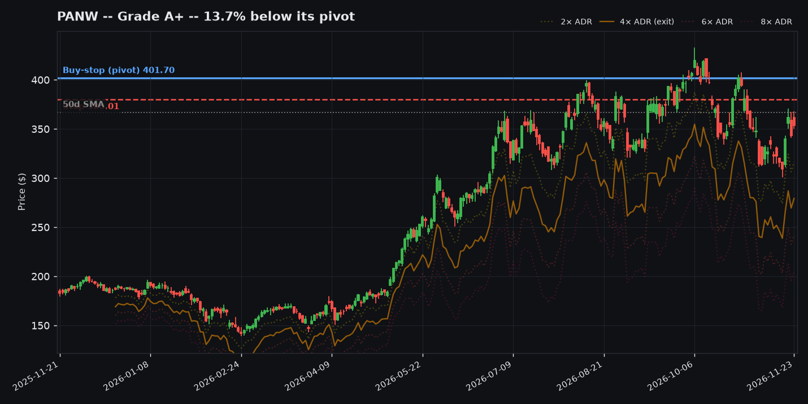
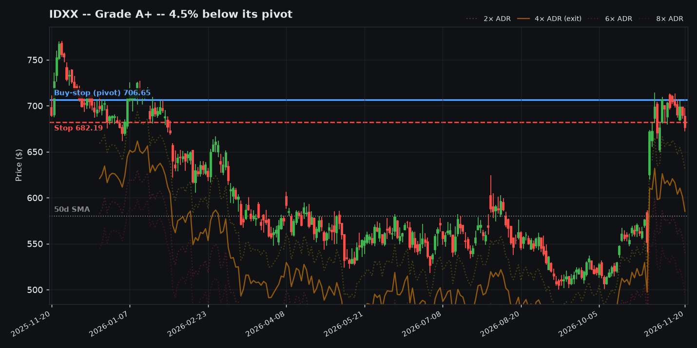
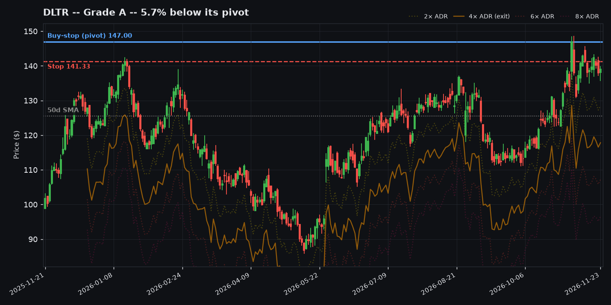
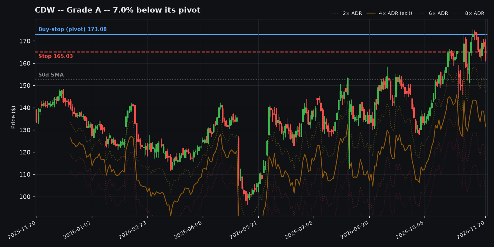
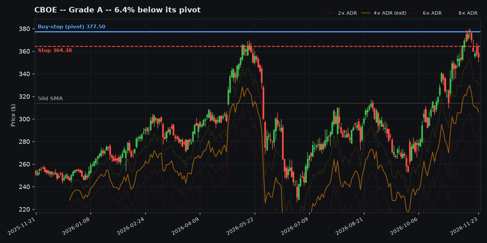
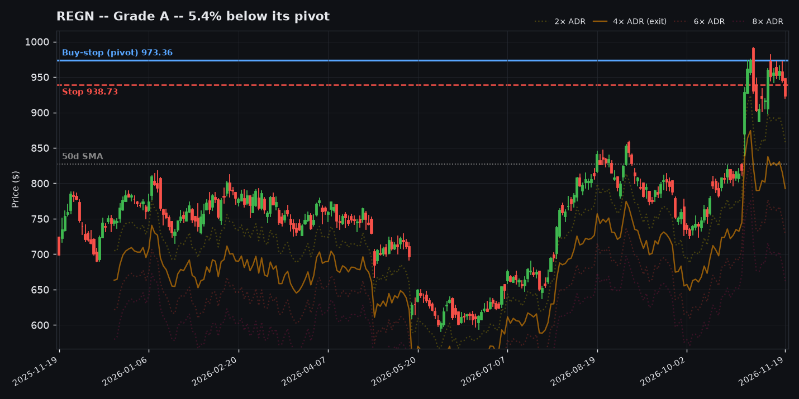

The market is in a defensive posture, with breadth reading 43% of the scanned universe above its 50-day moving average and 9 distribution days in the past month -- an elevated count worth watching. Zooming out, breadth has been deteriorating over the last 60 sessions (-10.5 pt change in % above the 50-day MA) and deteriorating over the last two weeks (-26.4 pt), while SPY is pulling back (-10.1% over 60 sessions, -8.4% over the last two weeks). That trend is broadly consistent with today's snapshot, not diverging from it. Momentum under the surface is leaning short -- 6 name(s) hit a fresh 52-week high today against 35 breaking down to a fresh 52-week low. Health Care is leading, with 57% of its 60 scanned names carrying an RS score of 70+ and 17 clearing a screen outright today, with Energy also showing real strength. It's being driven by names like VTRS, WST and BDX. With 66 name(s) clearing a screen across 8 sector(s), there's a workable watchlist below -- see Worth Watching for the shortlist tied to today's regime and themes.
Top A+/A/B setups armed for the next session (same rules as the ‘Today’ tab, the backtest and the forward test). Tap a ticker for its chart.
| # | Ticker | Grade | Strategy | Buy-stop | Stop |
|---|---|---|---|---|---|
| 1 | A+ | Minervini + QM | 30.76 | 29.73 | |
Why score +5
| |||||
| 2 | A+ | QM | 401.70 | 380.18 | |
Why score +4
| |||||
| 3 | A+ | QM | 706.65 | 682.19 | |
Why score +4
| |||||
| 4 | A | Minervini + QM | 147.00 | 141.27 | |
Why score +3
| |||||
| 5 | A | Minervini | 173.08 | 165.03 | |
Why score +3
| |||||
| 6 | A | Minervini + QM | 377.50 | 364.59 | |
Why score +3
| |||||
| 7 | A | QM | 972.37 | 937.18 | |
Why score +3
| |||||
7 tickers as of 2026-11-20, in the same order as the table above. Bars: blue = this ticker, green tick = grinder archetype avg, orange tick = rocket archetype avg. Screener output, not a recommendation.






